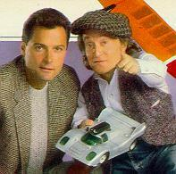

C’moooooon. You know you remember The Wizard. 1986? Dwarf? Toymaker? The CIA? Yeah, I thought you did! Good to know I’m not the only one. That show was pretty awesome. Little dude toymaker gets called up by the government each episode to craft some sort of robot dog or RC helicopter or rocket-powered pogo stick. When I was 8 years old, that was my five-year plan right there, save for the dwarfism. David Rappaport, who played title role passed away in 1990, but luckily some good sport in Norway has maintained a site about just him. You can check out his The Wizard pages, too. Anyway, I thought you’d enjoy this little trip back to 1986 when men were men, and the Cardinals won the NCAA championships.
update: apparently this Rappaport chap was involved with the founding of “Frestonia“, and independent state in the heart of London in the late 70′s.
¨

Today might have been the nicest day of the summer so far with temperatures in the mid 70s and the humidity a ridiculously low 50%. So, to mark the occasion, David, Kelly and I took a bike ride down by the river. Unfortunately, David came up lame with a ever-worsening flat. But, in the spirit of adventure, he plugged onward. Eventually, it was losing too much air and David found a good samaritan at the Bike Depot with a pump, and he got a boost. We made it just a little way down the RiverWalk before having to turn back. We got back into the Highlands shortly before David’s tire went completely flat.
To honor to the day, I took some photos. You can check them out in the Bike Ride gallery.
¨

Kelly and I woke up this morning to find that a tree-limb on one of our two big front yard trees had cracked during last night’s rainstorm and was laying almost in the road, but not quite. It completely blocked the sidewalk, though, so we thought it best to clean it up post-haste, as there is a fair bit of foot traffic. I decided to take some photos of the cleanup effort.
It’s just important to know that trees were down. That is all. Carry on.
¨

Behold! They grilled out at lunch-time and it was good
Also, behold the lunch-time grillout gallery.
¨

Normally, I don’t post stuff about my model sailplane hobby, but I thought that this neat idea was worth it. One of the ingenius guys at the Charles River RC club had the neat idea to fix a GPS to his plane and then take the information it gave him and plot it in 3-D space. The result was this image. He then later mixed that in with some satellite photography and came up with this image. Pretty neat! You’ll be able to read about it next month in an article he is preparing here next month.
update: for those interested, the original thread I found this on is here on LiftZone‘s forums: Show Me Your Launches!
¨

Today is the 35th anniversary of the successful Apollo 11 moon landing. In honor, I suggest you check out this kick-ass full-screen Quicktime panorama of the moon and the Apollo landing craft.
There are still some conspiracy folks questioning “Was it faked?” but there are heaps of evidence that say “it was it real!” I think I’d have to side with the “NOT FAKED” camp on this one. Mostly because the science is there, and maybe just a bit because Buzz Aldrin throws a mean left-hook.
NASA has a nice gallery of Apollo 11 photos, and you should check them out. After that, why don’t you take a look to the heavens this evening (link to Louisville-specific data at Heavens-Above.com), and wonder what it must have been like to be there on the moon.
¨

I suggest you do all you can to beg/borrow/steal Devendra Banhart‘s Rejoicing in the Hands.
Imagine if you will the sweet roughness of Will Oldham with the old touch of Marlene Dietrich. Yeah. Think about that. Sparse arrangements, often just Devendra and guitar accent his odd and often beautiful and melancholy lyrics. There is a waver in his voice that evoke the best of the old blues singers, but his phrasing is straight out of a 1940s cabaret or a smoke-filled movie.
It should be noted that his music belies his twenty-something years on this planet. Enjoy.
¨

class="External">Every day is Halloween in Harajuku.
links via MeFi, photo from here.
¨


{kind=link}
{kind=link}
{kind=link}